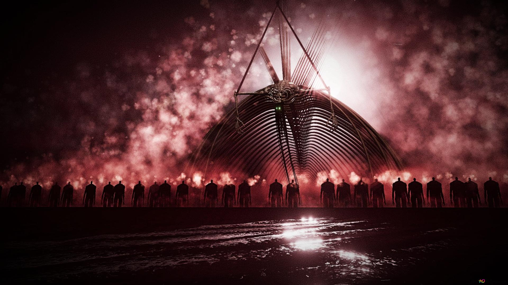

Eren Yeager é apontado como responsável por misteriosos tremores durante o Estrondo

SÃO PAULO — Um fenômeno sem precedentes teria causado pânico em diferentes regiões do planeta nesta terça-feira. Moradores afirmam ter visto uma gigantesca figura humana caminhando sobre o horizonte enquanto fortes tremores eram registrados em sequência. Nas redes sociais, milhares de usuários apontaram Eren Yeager como o responsável pelo misterioso acontecimento.
O caso teria começado às 6h17 da manhã, quando moradores relataram ouvir um barulho semelhante a milhares de passos simultâneos. Poucos minutos depois, prédios teriam começado a tremer e uma enorme nuvem de poeira teria surgido no horizonte.
Testemunhas afirmam que, no meio da nuvem, era possível enxergar dezenas de figuras gigantes caminhando em formação.
"Eu achei que fosse um terremoto. Então olhei pela janela e vi um gigante passando. Foi quando percebi que alguma coisa estava muito errada", afirmou um morador.
O suposto retorno do Estrondo
A teoria que rapidamente dominou as redes sociais afirma que o fenômeno seria uma nova manifestação do Estrondo, evento associado ao lendário Titã Fundador.
Usuários começaram a compartilhar imagens de Eren Yeager acompanhado por milhares de Titãs Colossais. Algumas publicações afirmam que o personagem teria reaparecido misteriosamente e iniciado uma nova marcha.
Uma fotografia que teria sido registrada por um satélite mostra uma enorme sombra atravessando uma região costeira. Especialistas, entretanto, ainda não conseguiram confirmar a autenticidade da imagem.
Apesar da falta de evidências, a hashtag #ErenVoltou teria alcançado milhões de visualizações em poucas horas.
Eren teria enviado uma mensagem
A situação ficou ainda mais estranha depois que uma transmissão misteriosa teria interrompido diversos canais de televisão.
Durante aproximadamente 30 segundos, uma imagem de Eren Yeager teria aparecido na tela. Em seguida, uma voz teria pronunciado uma única frase:
"Vocês tiveram tempo suficiente para esquecer. Agora, lembrem-se do Estrondo."
A transmissão teria desaparecido logo depois. Nenhuma emissora assumiu responsabilidade pelo sinal e as autoridades não confirmaram que a mensagem tenha realmente acontecido.

Militares entram em alerta
Após os relatos, forças militares de diferentes países teriam colocado suas equipes em estado de alerta. Aeronaves foram enviadas para investigar os pontos onde os supostos gigantes teriam sido vistos.
Entretanto, nenhuma aeronave teria conseguido se aproximar das figuras. Segundo testemunhas, os gigantes simplesmente desapareceram após alguns minutos.
Um suposto relatório militar vazado nas redes sociais afirma que o fenômeno teria provocado alterações na temperatura e pequenas ondas sísmicas.
O documento, porém, não teve sua autenticidade confirmada.
Especialistas não encontram explicação
Cientistas que analisaram os vídeos publicados na internet afirmam que algumas das imagens apresentam características impossíveis de explicar com os conhecimentos atuais.
Outros especialistas, no entanto, acreditam que os vídeos possam ser montagens digitais produzidas com inteligência artificial.
"Não podemos afirmar que exista qualquer fenômeno real apenas observando vídeos de redes sociais. É necessário analisar a origem das imagens e os registros sísmicos antes de chegar a qualquer conclusão", explicou um pesquisador.
O Estrondo é confirmado
Após horas de incerteza, autoridades teriam confirmado que o fenômeno observado nas últimas horas realmente está relacionado ao retorno de Eren Yeager e ao início de uma nova fase do Estrondo.
Imagens de satélite teriam registrado milhares de Titãs avançando em direção ao continente, enquanto enormes tremores continuam sendo detectados em diferentes regiões. Equipes de emergência foram mobilizadas para tentar retirar a população das áreas ameaçadas.
Em uma transmissão que teria sido captada por diferentes canais, Eren Yeager teria feito uma última declaração antes de desaparecer no meio da nuvem de poeira:
"O Estrondo começou novamente. Desta vez, ninguém será capaz de impedir o avanço."
Com os Titãs continuando sua marcha e novas áreas sendo atingidas a cada hora, governos de diferentes países teriam declarado estado de emergência.
A população permanece em alerta enquanto forças militares tentam encontrar uma maneira de interromper o avanço.
Para os sobreviventes, uma coisa já não parece ser dúvida: o Estrondo é real, Eren Yeager voltou e o mundo está novamente diante de uma ameaça que parecia pertencer apenas às histórias.